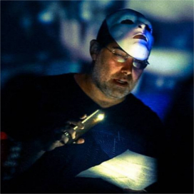

Oradores Invitados
LUNES 03 DE SEPTIEMBRE
10:00 - 13:00 (Aula 01-09)
| Natalia da Silva (PhD, Iowa State University): Es profesora adjunta en el Instituto de Estadística de la Universidad de la República en Montevideo (UDELAR-IESTA). Trabaja en investigación en métodos de aprendizaje supervisado, predicción, análisis de datos exploratorios y gráficos estadísticos en colaboración con Di Cook y Heike Hofmann. Es cofundadora de R-Ladies Ames y R-Ladies Montevideo y Chair de LatinR2018. |
10:00 - 13:00 (Aula 04-09)
| Andrés Farrall: Especialista en temas relacionados a la Ciencia de Datos. Actualmente es el Responsable del Área Metodológica de Ecoclimasol y Profesor de Postgrado en la Facultad de Cs. Exactas y Naturales (UBA). |
14:00 - 15:00 (Auditorio)
| Prof. Dr. Ramón López de Mántaras: Research Professor of the Spanish National Research Council (CSIC) and Director of the Artificial Intelligence Research Institute (IIIA). Master of Sciences in Computer Science from the University of California Berkeley, PhD in Physics (Automatic Control) from the University of Toulouse, and PhD in Computer Science from the Technical University of Barcelona. A pioneer of Artificial Intelligence in Spain, with contributions, since 1976, in Pattern Classification, Approximate Reasoning, Expert Systems, Machine Learning, Case-Based Reasoning, Autonomous Robots, and AI & Music. Author of nearly 300 papers. Invited plenary speaker at numerous international conferences. Former Editor-in-Chief of Artificial Intelligence Communications, editorial board member of several international journals, including AI Magazine, and former Associate Editor of the Artificial Intelligence Journal. Program committee Chairman or Conference Chairman of several major AI Conferences (UAI-94, ECML’00, ECAI-04, ECML-07, PKDD-07, and IJCAI-07). ECCAI Fellow. Co-recipient of five best paper awards at international conferences. Recipient, among other awards, of the “City of Barcelona” Research Prize in 1981, the “2011 American Association of Artificial Intelligence (AAAI) Robert S. Engelmore Memorial Award”, the “2012 Spanish National Computer Science Award” from the Spanish Computer Society, and the Distinguished Service Award of the European Association of Artificial Intelligence (EurAI) in 2016, and the IJCAI Donald E. Walker Distinguished Service Award in 2017. Member of the “Institut d’Estudis Catalans”. President of the Board of Trustees of IJCAI from 2007 to 2009. He serves on a variety of panels and advisory committees for public and private institutions based in the USA and Europe such as the EC Joint Research Center High-Level Peer Group. Presently working on case-based reasoning, machine learning, and AI applications to music. For additional information please visit: http://www.iiia.csic.es/~mantaras. |
Abstract: Artificial intelligence, is playing a significant role in creative activities such as music, architecture, fine arts, and science. Indeed, the computer is already a canvas, a brush, a musical instrument,... However, we should aim at more ambitious relations between computers and creativity. Rather than just seeing the computer as a tool to help human creators, we could see it as a creative entity at least to some degree. With this understanding in mind, an operational, and widely accepted, definition of creativity is: "a creative idea is a novel and valuable combination of known ideas". In other words, physical laws, theorems, musical pieces can be generated from a finite set of existing elements and, therefore, creativity is an advanced form of problem solving that involves memory, analogy, learning, and reasoning under constraints, among others, and is therefore possible to replicate by means of computers.
This view has triggered a new subfield of Artificial Intelligence called Computational Creativity. This talk addresses the question of the possibility of achieving computational creativity through some examples of computer programs capable of replicating aspects of creative behavior. We end with some reflections on the recent trend of “democratisation" of creativity by means of assisting and augmenting human creativity.
14:00 - 16:00 (SUM)
| Marcela Genero Bocco: Licenciada en Ciencias de la Computación por la Universidad del Sur (Argentina) y Doctora en Informática por Universidad de Castilla-La Mancha (UCLM, España). Actualmente es Catedrática en la Escuela de Informática de la UCLM. Tiene amplia trayectoria en investigación y formación sobre la Ingeniería del Software Empírica (ISE), avalada por un centenar de publicaciones (https://dblp.uni-trier.de/pers/hd/g/Genero:Marcela) y decenas de proyectos de investigación y tesis doctorales y de maestrías dirigidas. Desde el año 2004 es la representante de la UCLM en la red ISERN (http://isern.iese.de/Portal/), red que aglutina a profesionales y académicos de gran prestigio internacional sobre ISE. |
Este taller estará dividido en dos partes:
1) Conferencia de la Dra. Marcela Genero Bocco, sobre el “Pasado, Presente y Futuro de la Ingeniería del Software Empírica”, en la que hará un recorrido sobre la evolución de la Ingeniería del Software Empírica (ISE) para mostrar su relevancia en la actualidad y la importancia de esta disciplina para mejorar tanto la investigación, como la práctica de la Ingeniería del Software. También, se hará especial hincapié sobre cuáles son los principales retos que se deberán en el futuro dentro de la ISE.
2) Sesión de trabajo para formar la Red Argentina sobre Ingeniería del Software Empírica (RISE), que intentará reunir a todos los interesados en esta disciplina para crear una comunidad referente en la Argentina sobre ISE y posicionar a las instituciones y equipos participantes en lugares de referencia tanto a nivel nacional como internacional en lo que respecta a la investigación en Ingeniería de Software. Esta iniciativa impulsada desde la red RISE contribuirá a la madurez de la Ingeniería del Software fomentando la colaboración con empresas y que las decisiones que se tomen en el proceso de desarrollo de software se basen en evidencias y no en meras creencias. Esto sin lugar a dudas contribuirá a la mejora tanto de productos como procesos software tanto a nivel académico como industrial en la Argentina.
16:30 - 18:00 (Aula 06-05)
| Darío A. PICCIRILLI: es Licenciado en Sistemas Universidad Tecnológica Nacional, estudios de posgrado como Magister en Ing. de Software en el Instituto Tecnológico de Buenos Aires. Master en Ing. de Software en la Universidad Politécnicade Madrid. Doctor en Ciencias Informáticas (UNLP). Profesor Titular en la cátedra de PosGrado en Pericias Informáticas en Univ. Nacional de La Plata. Profesor Titular Cátedra Pericias Informáticas Carrera de Maestría en Sistemas de Información – Depto. Posgrado Univ. Tecnológica Nacional Profesor Titular Área de Sistemas en Univ. Nacional del Noroeste de la Prov. Bs.As. (UNNOBA). Profesor Titular Seminario ¨Auditoría y Pericias Informáticas¨ Univ. Nacional Tierra del Fuego. Director Cátedra Pericias Informáticas carrera Ing. en Sistemas de Información Univ. Tecnológica Nacional – FRBA. Especialista en Pericias Informáticas en fueros Penal, Civil, Comercial y Laboral, desde 1989, con más de 660 pericias a la fecha como perito de oficio y perito de parte. Consultor técnico pericial. Organizador en conjunto con INTERPOL y UIF del 1er. Seminario Lavado de Activos. Expositor en “Juicio Simulado en Financiación del Terrorismo y Delitos Graves Conexos”, organizado por la Oficina de naciones Unidas (UNODC), Centro de Naciones Unidas contra Terrorismo (UNCCT) y la UIF (Argentina). Expositor en distintos Congresos Nacionales e Internacionales, Director y Jurado en Tesis de Grado y posgrado en la materia pericial Informática. |
Ciberdelitos: la evidencia digital a través de las fronteras
Aspectos a considerar en la evidencia electrónica a través de las Fronteras. Situación actual en Criminalidad Informática. Evidencia digital a considerar tras las fronteras. Leyes propias del CiberEspacio?. Colaboración entre Organizaciones de Seguridad de los distintos países.
| Lic. Patricia Mónica Delbono: es Perito de Oficio en sistemas informáticos – Poder judicial de la Nación. Perito de parte - Consultora Analista de Inteligencia en Investigación Criminal Consejera Titular COPITEC |
¿QUE SABEN DE NOSOTROS LAS REDES SOCIALES?
Subir información a las redes sociales puede representar un verdadero peligro si no se maneja con cuidado. Datos sensibles, fotografías o actividades comerciales pueden representar un verdadero interés para una población delictiva poniendo en situación crítica a sus propietarios.
| Gastón Miguel Semprini: Licenciado en Sistema de Información, Universidad de Belgrano, Jefe del Departamento de Informática Forense del Poder Judicial de Rio Negro. “Master en Informática Forense y Pericial” proporcionado por el Instituto Europeo de Estudios Empresariales de España, “Experto en Informática Forense”, Universidad Tecnológica Nacional de Avellaneda. |
Casos concretos de obtención de evidencia digital de las distintas redes sociales
Procedimientos para la correcta obtención de evidencia digital almacenada en distintas redes sociales, preservaciones de evidencia en el fuero Laboral y Penal.
14:00 - 18:00 (Aula 04-09)
|
Jennifer Bryan (PhD, UC Berkeley): Ingeniera de Software en RStudio y Profesora Asociada de la University of British Columbia. Es una referente internacionalmente reconocida de la comunidad R dentro de la cual es integrante ordinaria de la R Foundation y parte del Comité de Liderazgo de rOpenSci.
|
18:15 - 20:00 (Auditorio)
| Martiniano Nemirovsci: es periodista, especializado en tecnologías y el cruce de éstas con procesos políticos y sociales. Es Secretario de Redacción de la Agencia de Noticias Télam, donde estuvo a cargo de distintos equipos y se desempeña actualmente como jefe de la sección de Tecnología. Trabajó en prensa gráfica, web y en radio (entre ellos Página/12, Agencia de Noticias AUNO, Nuevo Diario y FM Frecuencia Zero). Licenciado en Periodismo por la Universidad Nacional de Lomas de Zamora, fue docente de "Política de los medios" en la Universidad de Buenos Aires. También dirige y escribe en el blog sobre cultura digital KBZ.RED. |
La culpa no es del chancho sino del que le da de comer
El escándalo en torno al "uso indebido" de datos personales de usuarios de Facebook por parte de Cambridge Analytica (CA) fue apenas la manifestación de un mecanismo extendido a nivel global, que implica la existencia de un mercado negro global de datos y con el que la red social se beneficia a una escala impensada. Facebook desconoce cuántas empresas y organismos accedieron a la función utilizada por Cambridge Analytica. ¿Por qué estalló este escándalo? ¿Cuál es el siguiente?
 |
Esteban Magnani: es Escritor, docente y periodista. Licenciado en Ciencias de la Comunicación (UBA), carrera en la que también es JTP en la cátedra Gutiérrez de la materia “Principales Corrientes del Pensamiento Contemporáneo”. Realizó un MA in Media & Communication (London University). Colabora habitualmente en Página/12, El Dipló, Review, Caras y Caretas, Revista Ñ y en la revista Acción del Banco Credicoop. También hizo algunas colaboraciones para medios extranjeros como Briarpatch y Zmag. Integró la redacción de Hecho en Bs.As. Escribió numerosos libros sobre historia de la ciencia. En 2014 publicó “Tensión en la red. Libertad y control en la era digital”. En 2009 y 2010 dio clases sobre “Movimientos sociales en América Latina y empresas recuperadas” para estudiantes estadounidenses de Union College que participan del programa internacional de la UNTREF. En noviembre de 2014 recibió la “Distinción UNLa en ciencia y tecnología”. Desde octubre de 2012 a diciembre de 2015 condujo la columna de tecnología del noticiero de la TV Pública Visión 7. Desde octubre de 2016 es director de Medios Audiovisuales y Digitales de la Universidad Nacional de Rafaela. |
No es una filtración, es un modelo de negocios
Luego del escándalo de Cambridge Analytica Facebook se habló de "filtración de datos de Facebook". Sin embargo, un análisis del modelo de negocios de las redes sociales permite ver que este es sólo un efecto colateral más entre muchos otros de un objetivo claro: ganar más dinero. ¿Cuál es el límite? ¿La democracia?.
|  | Ariel Vercelli: es Investigador del ‘Consejo Nacional de Investigaciones Científicas y Técnicas’ (CONICET), con lugar de trabajo en el ‘Departamento de Historia’ (DH), ‘Facultad de Humanidades’ (FH), ‘Universidad Nacional de Mar del Plata’ (UNMdP). Es Doctor en ‘Ciencias Sociales y Humanas’ de la ‘Universidad Nacional de Quilmes’ (UNQ), Magíster en ‘Ciencia Política y Sociología’ de FLACSO Argentina, Posgrado en ‘Informatización Nacional’ por la ‘Agencia Coreana para las Oportunidades Digitales’ (KADO-NIA), Posgrado en ‘Derecho de Internet’ de ‘Harvard Law School’, Posgrado en ‘Propiedad Industrial’ de la ‘Universidad de Buenos Aires’ (UBA), Posgrado en ‘Derecho de Autor y Derechos Conexos’ de la UBA, Escribano de la ‘Universidad Nacional de Rosario’ (UNR) y Abogado de la ‘Universidad Nacional de Mar del Plata’. Ha dictado cursos de posgrado en la UNQ, la ‘Universidad Nacional de San Martin’, la ‘Universidad Nacional del Sur’, el ‘Centro Argentino de Información Científica y Tecnológica’ de CONICET y la ‘Escuela del Cuerpo de Abogados del Estado’. Fue docente de grado en la ‘Facultad de Ciencia Sociales’ de la UBA y la ‘Facultad de Derecho’ de la UNR. A su vez, fundó y preside ‘Bienes Comunes A. C.’, fue creador y columnista del blog Agenda Digital en TÉLAM S. E.’ y traductor y líder de Creative Commons Argentina. |
La (des)protección de los datos personales, las campañas políticas en la era digital y el futuro de las democracias
A mediados de marzo de 2018 una cámara oculta de Channel 4 y otras investigaciones periodísticas revelaron al público como algunas corporaciones tecnológicas, en este caso Facebook Inc. y Cambridge Analytica, favorecian el uso de datos personales de millones de usuarios de redes sociales para hacer campañas electorales e influir el voto popular. Ahora bien, si una empresa pudo usar los datos personales de los usuarios de Facebook Inc., entonces, ¿cuántas otras empresas alrededor del mundo también podrían hacerlo? ¿Qué "otras consecuencias" políticas pueden presentarse a partir de la violación masiva y sistemática del derecho humano a la privacidad (individual y de las poblaciones)? El análisis del caso evidencia la necesidad de repensar y de rediseñar las regulaciones de Internet.
18:15 - 19:00 (SUM)
| Robert Raszuk: Robert graduated with Master's Degree in Faculty of Electronics from the Warsaw University of Technology in 1995. During his last year of study he already started to work in Network Engineering department at Nations Bank operating enterprise WAN cross US backbone. As one of the project he was responsible for migration of all NB's campuses to Ethernet catalyst switches from token ring and FDDI technologies as well as all WAN (RIP based) Wellfleet routers to Cisco devices and link state IGP (1995/1997). His further carrera led him through both customer focus and engieering/architecture roles including 14 years of Cisco Systems as Principal Eng (NSA, IOS, IOSXR), 3 years as Distingushed Engineer in Juniper Networks (RPD team), following next 3 years as DE/Cloud Architect position of NTT MCL/I3. Shortly after joining Cisco he became CCIE (#3690). The over 3 years of focus on open source based production grade SDN projects for NTTCommunication global data centers provided great background and experience to join in 2014 Mirantis Inc. as Distinguished Eng with main role of Cloud and Network Architect in their services team. Over the years, Robert has been the author/coauthor of more than 60 patents aw well as number of IETF RFCs and drafts. His focus has concentrated on large scale routing, mainly BGP, L3VPNs, MPLSTE, IGPs and Data Centers. He has made it as his current priority to help Service Providers to build and effectively operate their cloud infrastructures using emerging host and network virtualization tools. He currently dedicates his time to bring routing experience to data center world as well as transition traditionally deployed network based closed vendor solutions to open source based overlays to accelerate telco's service innovation velocity. |
MARTES 04 DE SEPTIEMBRE
14:00 - 15:00 (Aula 04-09)
| Prof. Dr. Sichman is an Associated Professor at University of São Paulo, from where he has obtained both his B.E. and M.E. degrees. He was one of the first students to obtain an European label to his PhD degree, developed at the Institut National Polytechnique de Grenoble (INPG), France, since part of his research was carried out at the Istituto di Psicologia del CNR, Rome, Italy. More recently, he has spent an abbreviated post-doctoral period at the University of Utrecht, at the Netherlands. His main research focus is multi-agent systems, more particularly social reasoning, organizational reasoning, multi-agent-based simulation, reputation and trust, and interoperability in agent systems. He has advised/co-advised 12 MSc, 12 PhD and several undergraduate students. With other colleagues, he was one of the founders of two subdomains in Multiagent systems, namely Multi-Agent-Based Simulation (MABS) and Coordination, Organization, Institutions and Norms in Agent Systems (COIN), that have originated two successful international workshop series. He has published more than 270 papers in national and international conferences and journals. He is member of the editorial board of the Journal of Artificial Societies and Social Simulation (JASSS), Mediterranean Journal of Artificial Intelligence, Computación y Sistemas, Iberoamerican Journal of Artificial Intelligence and the Knowledge Engineering Review. He has organized several workshops and international conferences and workshops; in particular he was the SBIA/IBERAMIA General Chair (2000), Program Co-Chair (2006), WCSS General Chair (2014) and AAMAS Tutorial Chair (2007), Program Co-Chair (2009) and Local Chair (2017). He was a member of the Brazilian Computer Society Advisory Board between 2005 and 2009, and was the coordinator of its Artificial Intelligence Special Commission (CEIA) between 2000 and 2002. He was also the director of the Centro de Computação Eletrônica (CCE) of the University of São Paulo between 2010 and 2013. |
Abstract: In this talk, we will present our approach to program multi-agent systems, namely focusing on three complementary dimensions: agent-oriented programming, organisation-oriented programming, and environment-oriented programming. Based on our new results, we will then show how the concepts of autonomy and normative compliance could be inserted in this framework.
18:00 a 19:00 (Auditorio)
|
Jennifer Bryan (PhD, UC Berkeley): Ingeniera de Software en RStudio y Profesora Asociada de la University of British Columbia. Es una referente internacionalmente reconocida de la comunidad R dentro de la cual es integrante ordinaria de la R Foundation y parte del Comité de Liderazgo de rOpenSci.
|
MIERCOLES 05 DE SEPTIEMBRE
9:30 - 10:30 (Aula 01-09)
| Dr. Gustavo Vulcano: Profesor plenario de Operaciones en la Escuela de Negocios de la Universidad Torcuato di Tella (UTDT), e investigador independiente del CONICET. Es también director del nuevo Master in Management (MiM) + Analytics en UTDT. El Prof. Vulcano se graduó como Licenciado en Ciencias de la Computación (UBA) en el año 1997, y posteriormente se doctoró en Decision, Risk and Operations en la Graduate School of Business, Columbia University (2003). Antes de incorporarse a di Tella, el Prof. Vulcano se desempeñó como profesor full-time en la Leonard N. Stern School of Business, New York University, durante el período 2002-2017, donde consiguió su promoción a Associate Professor with tenure en el año 2012. Actualmente se desempeña allí como profesor adjunto, enseñando dos cursos en el Master of Science in Business Analytics. Su trabajo de investigación incluye tópicos de revenue y pricing analytics, retail operations, y supply chain management. Sus papers han sido publicado en los más destacados journals internacionales de estas disciplinas, incluyendo Operations Research, Management Science, y Manufacturing and Service Operations Management. Actualmente se desempeña como co-editor de la nueva área de Revenue Management & Market Analytics en el journal Operations Research, y como editor asociado del journal Management Science. El Prof. Vulcano ha sido también Chair de la INFORMS Revenue Management and Pricing Section durante el período 2016-17, y ocupa ahora la posición de past-chair en el board. Asimismo, el Dr. Vulcano ha realizado trabajos de consultoría internacional en el área de servicios para Delta Airlines, Sabre Holdings y Movie Uruguay. En Argentina, ha sido consultor de la Fundación Pérez Companc, el Standard Bank (actualmente, ICBC), el grupo Flechabus, y Aerolíneas Argentinas. |
Aplicaciones de grafos y programación entera para la personalización de ofertas en la industria retail.
Para un retailer, la implementación de promociones personalizadas es un medio para evitar el efecto negativo de las promociones masivas, como por ejemplo efectos de acumulación de stock por parte de los clientes aprovechando descuentos en productos que de todos modos comprarían. Las promociones personalizadas se apoyan en las preferencias heterogéneas de individuos para productos dentro de una categoría, y en sus diferentes reacciones a los precios descontados. En este trabajo consideramos el diseño de promociones personalizadas, y la predicción de las respuestas de los clientes a tales promociones sobre una categoría de productos. Finalmente, en base a esas predicciones, estudiamos el problema de optimizar el subconjunto de productos a promocionar durante la visita de un cliente a la tienda.
Los inputs requeridos por nuestra propuesta incluyen datos de panel con la historia de transacciones etiquetadas con el ID de cada cliente, información sobre el mix de productos disponible para una categoría de productos, y la identificación de productos que estaban en promoción en el momento de cada visita por parte de cada cliente.
Las preferencias de cada cliente se representan con un grafo acíclico dirigido (DAG). El DAG se construye en base a los datos históricos que revelan las preferencias de cada cliente. En el DAG, cada nodo i representa un producto, y el arco dirigido (i,j) representa la relación “el producto i es preferible sobre el producto j”.
Desde el punto de vista teórico, proveemos cotas computacionalmente tratables para calcular tanto la probabilidad de observar un DAG como las probabilidades de compra (que en general son problemas #P-hard). Luego, tomando la colección de DAGs representando la base de clientes, calibramos sobre sí variantes del modelo multinomial logit (MNL), junto a dos benchmarks que constituyen estados del arte en la materia (pero que no usan la estructura de DAGs). Finalmente, testeamos tanto nuestro modelo basado en DAGs como los dos benchmarks para el diseño de promociones personalizadas. Vía una formulación MIP, consideramos el problema de optimizar el subconjunto de productos a ofrecer en promoción para un cliente particular, dado un surtido de productos prefijado, con el objetivo de maximizar ingresos.
Los experimentos numéricos en datos de panel reales sobre 27 categorías de productos muestran que nuestra propuesta permite predicciones más certeras respecto a las compras de los clientes que los benchmarks testeados, con mejoras del orden de 10%. Finalmente, nuestro MIP para ofrecer promociones personalizadas permiten mejoras del 26% (en promedio) sobre los resultados que exhibe el dataset.
Trabajo conjunto con Srikanth Jagabathula y Dmitry Mitrofanov (New York University).
11:30 - 13:00 (Aula 01-09)
| Prof. Ignacio E. Grossmann: is the R. R. Dean University Professor of Chemical Engineering, and former Department Head at Carnegie Mellon University. He obtained his B.S. degree at the Universidad Iberoamericana, Mexico City, in 1974, and his M.S. and Ph.D. at Imperial College in 1975 and 1977, respectively. He is a member and former director (2005-2015) of the “Center for Advanced Process Decision-making,” an industrial consortium that involves about 20 petroleum, chemical, engineering and software companies. He is a member of the National Academy of Engineering. He has received the following AIChE awards, Computing in Chemical Engineering, William H. Walker for Excellence in Publications, Warren Lewis for Excellence in Education, and Research Excellence in Sustainable Engineering. In 2003 he received the INFORMS Computing Society Prize, and is currently a Fellow of INFORMS. In 2015 he was the first recipient of the Sargent Medal by the IChemE. He has honorary doctorates from Abo Akademi in Finland, University of Maribor in Slovenia, Technical University of Dortmund in Germany, University of Cantabria in Spain, and from the Russian Kazan National Research Technological University. He has been named Thomson Reuters Highly Cited Researcher in 2014-2016. His research interests are in the areas of mixed-integer, disjunctive and stochastic programming, energy systems including petroleum, shale gas and biofuels, water networks, and planning and scheduling for enterprise-wide optimization, and reliability optimization. He has authored more than 500 papers, several monographs on design cases studies, and the textbook “Systematic Methods of Chemical Process Design,” which he co-authored with Larry Biegler and Art Westerberg. He has graduated 58 Ph.D. and 16 M.S. students. |
Recent Theoretical and Computational Advances in the Optimization of Process Systems under Uncertainty
Optimization under uncertainty has been an active and challenging area of research for many years. However, its application in Process Systems has faced a number of important barriers that have prevented its effective application. Barriers include availability of information on the uncertainty of the data (ad-hoc or historical), determination of the nature of the uncertainties (exogenous vs. endogenous), selection of an appropriate strategy for hedging against uncertainty (robust optimization vs. stochastic programming), handling of nonlinearities (most work addresses linear problems), large computational expense (orders of magnitude larger than deterministic models), and difficulty in the interpretation of the results by non-expert users.
In this lecture, we describe recent advances that address some of these barriers. We first describe the basic concepts of robust optimization, including the robust counterpart, showing its connections with semi-infinite programming. We also we explore the relationship between flexibility analysis and robust optimization for linear systems. A historical perspective is given, which shows that some of the fundamental concepts in robust optimization have already been developed in the area of flexibility analysis in the 1980s. We next consider two-stage and multi-stage stochastic programming in the case of exogenous parameter, for which we describe acceleration techniques for Benders decomposition, hybrid sub-gradient/cutting plane methods for Lagrangean decomposition, and sampling techniques. We address both mixed-integer linear and nonlinear stochastic programs, including integer recourse. We then address the generalization to the case of both exogenous and endogenous parameters, which gives rise to conditional scenario trees for which theoretical properties are described to reduce the problem size. To avoid ad-hoc approaches for setting up the data for these problems, we describe approaches for handling of historical data for generating scenario trees. Finally, we illustrate the application of each of these formulations in demand-side management optimization, planning of process networks, chemical supply chains under disruptions, planning of oil and gas fields, and optimization of process networks, all of them under some type of uncertainty.
15:00 - 16:00 (SUM)
| Octavio Lange Ingeniero Agrónomo (UBA) y Magíster en Administración de Negocios (UNICEN): Nacido en Tandil, con más de 6 años especializándose en tecnologías digitales en el sector agropecuario. Asesor CREA de la región Mar y Sierras y responsable del proyecto Palenque de la Fundación Sadosky. |
El proyecto Palenque como facilitador del ecosistema AgTech.
Día tras día surgen nuevas y mejores herramientas para agregar valor o resolver problemáticas del. sector agropecuario, tanto públicas como privadas. El. inconveniente es que cada actor brinda soluciones estancas con bajo grado de colaboración entre ellas. El. desafío es acordar un lenguaje común y lograr que estas herramientas puedan interoperar entre sí para alcanzar mejores soluciones y generar mayor conocimiento colectivo y conectivo
16:30 - 17:00 (Aula 04-09)
| Juan F. Gabriel: es Director General de TICS en el Ministerio de Salud de Neuquén y trabaja desde hace más de 15 años especializado en el área de TICS aplicadas a la Salud Pública. Actualmente co-dirige ANDES, el proyecto de implementación de Historia Digital de Salud en la provincia de Neuquén. Realizó sus estudios de Licenciatura en Cs. De la Computación en la Universidad Nacional del Comahue y dedicó gran parte de su carrera profesional al desarrollo de aplicaciones utilizando nuevas tecnologías. | |
| Lic. Marcelo D. Carrascal: Jefe del Dto. de TI Hospital Castro Rendón. Project Manager – Ministerio de Salud de la Provincia de NQN. Consultor de la Dirección Nacional de Sistema de Información de Salud. Co-Autor Ley 2977 Ley 2977 (HUDS). Miembro E.Learning Advisory Group SNOMED CT. Capacitador Nacional SNOMED CT Implementation. Miembro del Subcomité de Seguridad de la Información de IRAM. |
ANDES es la plataforma digital que implementa la Historia Única Digital de Salud (HUDS) en la provincia de Neuquén y tiene próximas implementaciones en otras provincia. Es un proyecto gratuito, de código abierto, basado íntegramente en HL7, FHIR y SNOMED. Compartiremos experiencias, aciertos y errores en la creación de este ecosistema de aplicaciones de salud.
16:30 - 17:30 (SUM)
| Dr. Eduardo Alfredo Favret: Doctor de la Universidad de Buenos Aires en Ciencias Físicas. Investigador del Instituto de Suelos del INTA. Investigador del CONICET, y Profesor Universitario del Instituto de Tecnología “Jorge Sábato”, UNSAM – CNEA. Su tema principal de investigación es Biomimética / propiedades funcionales de superficies biológicas y su desarrollo en superficies tecnológicas. En 2010 publicó un libro titulado “Functional Properties of Bio-inspired Surfaces: Characterization and Technological Applications”, (World Scientific Publishing Company). En 2015 obtuvo una patente “Modified Surface Topography for an Agricultural Tool” otorgada por Agencia Federal para la concesión de patentes y registro de marcas de Estados Unidos. En 2017 obtuvo el Gran Premio INNOVAR 2017 por su proyecto “Superficie biomimética aplicada a la maquinaria agrícola”. |
17:00 - 18:00 (Aula 04-09)
 |
Rodolfo Esteban Laffitte: Secretario de Modernización de la Gestión Pública del gobierno de la provincia del Neuquén. Ingeniero en Electrónica. Especialista con 40 años de experiencia en el desarrollo e implementación de TICs en el sector público. |
|
Gustavo Giorgetti: Facilitador responsable del despliegue del Modelo de Integrabilidad de Neuquén. Coautor del libro “Gestionar Cambios Complejos”, EDICON 2016. (donde se relata la experiencia del caso de Neuquen) |
Estonia es considerado el 1er país digital del mundo, en donde toda la información de salud es asegurada con tecnología Blockchain. En 2008 el Gobierno de la provincia del Neuquén tomó como referencia el modelo digital de Estonia para desarrollar su modelo de Integrabilidad. Presentaremos el resultado de esta experiencia, resumiendo las claves que permitieron su adopción y adaptación.
18:00 - 19:00 (Auditorio)
|
Walter Sosa Escudero: Investigador Principal de CONICET. Profersor y Director del departamento de Economía - Universidad de San Andrés. TEDxRiodelaPlata. Autor de ¿Qué es (y qué no es) la estadística? y El lado oscuro de la econometría. |
| Prof. Dr.-Ing. Armando Walter Colombo (Fellow IEEE): joined the Department of Electrotechnical and Informatics at the University of Applied Sciences Emden-Leer, Germany, became Full Professor for Industrial Informatics in August 2010 and Director of the Institute for Industrial Informatics, Automation and Robotics (I2AR) in 2012. He worked during the last 17 years as Manager for Collaborative Projects and also as Edison Level 2 Group Senior Expert at Schneider Electric, Industrial Business Unit. He received the BSc. on Electronics Engineering from the National Technological University of Mendoza, Argentina, in 1990, the MSc. on Control System Engineering from the National University of San Juan, Argentina, in 1994, and the Doctor degree in Engineering (Production Automation and Systematization) from the University of Erlangen- Nuremberg, Germany, in 1998. From 1999 to 2000 was Adjunct Professor in the Group of Robotic Systems and CIM, Faculty of Technical Sciences, New University of Lisbon, Portugal. His research interests are in the fields of industrial cyber-physical systems, industrial digitalization and system-of-systems engineering, Internet-of-Services, Industry 4.0- compliant solutions. Prof. Colombo has over 30 industrial patents and more than 300 per-review publications in journals, books, chapters of books and conference proceedings (see https://scholar.google.com/citations?user=csLRR18AAAAJ). Prof. Colombo has extensive experience in managing multi-cultural research teams in multi-regional projects. He has participated in leading positions in many international research and innovation projects in the last 16 years. With his contributions, he has performed scientific and technical seminal contributions that are nowadays being used as one of the basis of what is recognized as “The 4th Industrial Revolution”: networked collaborative smart cyber-physical systems that are penetrating the daily life, producing visible societal changes and impacting all levels of the society. He is co-founder of the IEEE IES TC on Industrial Agents and TC on Industrial Informatics. He is founder and currently Chairman of the IEEE IES TC on Industrial Cyber- Physical Systems and member of the IEEE IES Administrative Committee (AdCom). Prof. Colombo served/s as advisor/expert for the definition of the R&D&I priorities within the Framework Programs FP6, FP7 and FP8 (HORIZON 2020) of the European Union, and he is working as expert/evaluator in the European Research Executive Agency (REA), ECSEL, Eureka- and German BMBF/DLR IKT-Programs. Prof. Colombo is listed in Who’s Who in the World /Engineering 99-00/01 and in Outstanding People of the XX Century (Bibliographic Centre Cambridge, UK). |
Working with Industrial Cyber-Physical System and Industry4.0-compliant Solutions (Education and Training Requirements)
We are witnessing rapid changes in the industrial environment, mainly driven by business and societal needs towards production customization and the digitalization of the economy, i.e., digitalization and interconnection of products, services, enterprises, and people. This trend is supported by new disruptive advances in the cross-fertilization of concepts and the amalgamation of information-, communication-, control- and mechatronics technology- driven approaches in traditional industrial systems. In this context, industrial informatics combine the progress achieved by the application of large distributed and networked computing systems on product and production system design, planning, engineering, and operation with the power of digital data that are produced by industrial processes and also collected by the Internet of Things. The technological, economic, and social impacts of these developments are so enormous that the whole process is labeled as the 4th Industrial Revolution.
In 2006, the term “Cyber-Physical Systems” (CPS) was coined to “refer to the integration of computation with physical processes”. CPS can be described as smart systems that encompass hardware and software, computational and physical components, seamlessly integrated and closely interacting to sense and to control in real-time the changing state of the real world. These systems involve a high degree of complexity at numerous spatial and temporal scales, and highly networked communications integrating their computational and physical components. As such CPS refer to Information-Communication-Control- Mechatronics-Systems (sensing, actuating, computing, communicating, etc.) embedded in physical objects, interconnected through several networks including the Internet, and providing citizens and businesses with a wide range of innovative applications based on digitalized data, information and services.
Ontologically the term Cyber-Physical Systems means hardware-software systems which tightly couple the physical world and the digitalized (virtual) world. In a CPS ecosystem, on the one hand every real physical object has one or more cyber representations, and on the other hand a cyber component or system can be linked to a physical representation i.e., an object in the 3-dimensional human-tangible world. Moreover, these objects are increasingly interconnected in real-operational-time, networked either permanently or communicate in an asynchronous manner from time to time, possessing all essential characteristics of real-time-critical systems.
Industrial Cyber-Physical Systems (ICPS) and Industry4.0-compliant solutions forge the core of real-world networked industrial infrastructures having a cyber-representation through digitalization of data and information across the enterprise, along the product and process engineering life-cycle and from suppliers to customers along the supply chain. As such the competitive performance of an ICPS mainly depends on the ability to effectively collect, analyze and use large-scale digitalized data and information from many different and often heterogeneous sources, to sustainably and efficiently manage, supervise and operate in the industrial environments. This effective information-driven interaction of ICPS with other CPS and enterprise systems, extending to all business processes, is viewed as vital to modern Industry4.0-compliant infrastructures.
There are many challenges ahead in the convergence of computing, control, mechatronics and communications for CPS and Industry4.0-compliant ecosystems. There is a need for investigating and learning a wide spectrum of foundations, research and technological fields. In this context, the plenary talk (i) addresses the penetration and proliferation of such ecosystems into the industrial environments, taking into account that the same trend is also evident in other domains such as energy, healthcare, manufacturing, military, transportation, consumer, enterprise, robotics, and smart cities, among others; and (ii) offers an overview of major requirements to learning, teaching, training students, technicians and engineers for working with ICPS and Industry4.0-compliant solutions.
After presenting the scientific and technical background behind Industrial Cyber-Physical Systems (ICPS), their relationship to other frameworks like Systems-of-Cyber-Physical Systems, Industrial Internet-of-Things (IIoT) and Industry4.0, and associated technology standardization/normalization initiatives, the audience/participants of the plenary talk will get a deep view about:
● Which is the minimal necessary pre-existing Know-How for understanding and working with ICPS and Industry4.0-compliant solutions?
● What and How to learn ICPS and Industry4.0-compliant solutions? (Recommendations for graduated and post-graduate students, and industrialists)
● What and How to teach ICPS and Industry4.0-compliant solutions? (Recommendations for trainees, professors, etc.)
● How to engineer and operate ICPS and Industry4.0-compliant solutions?
JUEVES 06 DE SEPTIEMBRE
10:00 - 10:30 (Aula 04-09)
| Matias Said: Licenciado en Administración con formación en ingeniera de sistemas, Informática biomédica y gestión de proyectos. Trabaja hace 9 años en al ámbito de la informática medica, habiendo participado y liderado proyectos de implementación de sistemas de información, mejora de procesos organizacionales y desarrollo de aplicaciones de inteligencia de negocios. |
Realización y custodia de informes de las mamografías realizadas por el tren sanitario, en el Hospital El Cruce.
Se presentara la implementación de un proyecto de Telemedicina que consta en la realización de los informes de los estudios de Mamografías que se realizan en el tren sanitario, enfocando en:
- La infraestructura de sistemas que le da soporte como la coordinación.
- La adecuación de los procesos de trabajo y coordinación de actividades para garantizar un servicio de calidad.
| Dr. Cristián E. Cortés: is Associate Professor at the Civil Engineering Department, Universidad de Chile. He got the Civil Engineering title and the MSc degree from Universidad de Chile in 1995, and the PhD degree in Civil Engineering from University of California at Irvine in 2003. His areas of interest are network flows, optimization, logistics, public transport operations, equilibrium models, simulation, freight transportation, scheduling, stochastic and dynamic problems with applications in transportation. He has published 41 papers in ISI indexed journals. In addition, he has published more than 80 articles in Conference Proceedings plus other 10 papers in other non ISI journals. He has published one book plus two book chapters. He has supervised more than 40 theses at undergraduate, MSc and PhD levels, most of them at Universidad de Chile. He has worked as leader in several applied projects in the areas of logistics and transportation, including air transportation, specifically the ground handling operations of an international airport, routing and network design strategies in the distribution of e-commerce products, production and dispatch of ready-mix concrete mixers, timetabling and vehicle scheduling in public transport operations, demand responsive schemes for solving mobility issues in the case of a Chilean city, development of simulation schemes for public transport as well as distribution of services, etc. Nowadays, he is the Chief of the Transport Engineering Division in the Civil Engineering Department at Universidad de Chile. He is also Associate Editor of Transportation Science. He has been involved in the organization of many international workshops in transport and logistics topics, being the most important his role as Chair of the Organizing Committee of the Triennial Symposium of Transportation Analysis (TRISTAN VIII) organized in San Pedro de Atacama, Chile in 2013. |
GRASP heuristic scheme for solving a real case of a ready-mixed concrete production and dispatching problem
Concrete is one of the most important raw materials in the construction industry. It is commonly used in infrastructure works and buildings, where it is used from foundations to roofs. Concrete is manufactured in dedicated sites we will call hereinafter plants. Concrete is a fast perishable good that must be produced just in time to meet customer demand requests, since it is not possible to store the concrete beforehand. The problem of production planning of concrete and dispatching concrete trucks is known in the literature as the ready-mix concrete dispatching problem (RMCDP), which is a generalization of both the vehicle routing and the parallel machine scheduling problems. In particular, this research deals with a real application on a major provider of concrete in Santiago, Chile, in which the scheduling of plants for production and the assignment of trucks for final dispatch of requests to the sites, are processes that have to be treated simultaneously. Although, customers, requests, resources and even the fleet, could vary from a day to another, the RMCDP we consider is a deterministic static problem solved daily by the company. We have implemented a GRASP heuristic algorithm to solve not only the static but also the dynamic versions of the problem. We have run many tests of the algorithm using historical data from the field provided by the company, obtaining promising results when compared to current practice. The final target is to implement a software in the company to make proper decisions of productions and assignment in order to minimize total costs, including mainly costs of delay, transportation and production.
Coauthors: Pablo A. Rey, Mauricio Cerda, Zdenko Koscina.